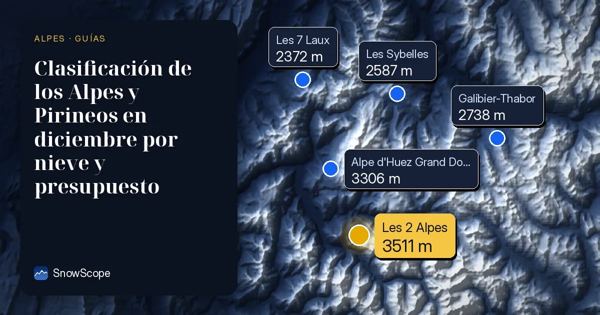

Clasificación de los Alpes y Pirineos en diciembre por nieve y presupuesto
Las estaciones fronterizas francesas e italianas encabezan nuestra clasificación de valor de diciembre de 2026 para viajes de bajo coste. Les 2 Alpes lidera con 75 cm en su media montaña en un diciembre habitual y un pase de 6 días a 266,50 EUR, mientras que Livigno cobra 258,50 EUR antes del 18 de diciembre. Las áreas de los Pirineos ocupan los últimos lugares con poca nieve y forfaits que no son una ganga.
Consulta la previsión de nieve en tiempo real de Les 2 Alpes en la app SnowScopeEspesor de nieve, alertas de nieve polvo y mapa 3D, gratis.
Cómo comparamos las diez zonas de esquí
Clasificamos diez estaciones en Francia, Suiza, Italia, Andorra y España usando nuestro historial de nieve de 46 inviernos pasados. Cada estación se comprueba en la base de los remontes, a media montaña y en la cima, junto con sus pistas y remontes mapeados. Los precios de los pases provienen de cada sitio oficial para 2026-27, excepto La Thuile, donde no se comprobó ningún precio en el sitio oficial. Las cifras de nieve dividen a las diez en tres grupos claros.

Líderes de nieve segura y zonas fronterizas
Les 2 Alpes encabeza nuestra tabla con un área de esquí mapeada de 108 km de pistas y 46 remontes que alcanzan los 3511 m. Su base de 1284 m es delgada, con un promedio de 16 cm (0 cm mínimo, 39 cm máximo) y alcanza 30 cm o más en el 2 % de los inviernos pasados entre el 1 y el 7 de diciembre y el 37 % entre el 22 y el 28 de diciembre. Quédate a media montaña (2397 m), que tiene un promedio de 75 cm (30 cm mínimo, 140 cm máximo) y alcanza 50 cm o más en el 46 % de los inviernos pasados entre el 1 y el 7 de diciembre, el 72 % entre el 8 y el 14 de diciembre, el 87 % entre el 15 y el 21 de diciembre y el 91 % entre el 22 y el 28 de diciembre, mientras que la cima de 3511 m tiene un promedio de 176 cm (72 cm mínimo, 302 cm máximo). Los pases cuestan 68,00 EUR para un ticket flexible de 1 día, 266,50 EUR para 6 días, o 42 EUR por día el 28-29 de noviembre de 2026; la nieve a media montaña creció de 63 cm en los primeros 15 inviernos a 77 cm en los últimos 15 inviernos.
Saas-Fee (48 km de pistas mapeadas, 30 remontes) alcanza los 3556 m con 68 cm habituales a media montaña (2668 m; 31 cm mínimo, 113 cm máximo; bajando de 70 cm a 63 cm), aunque los pases cuestan CHF 86 por 1 día y CHF 419 por 6 días. En nieve destacan dos estaciones fronterizas: Montgenèvre (62 km, 24 remontes) y La Thuile (79 km, 17 remontes). Montgenèvre tiene un promedio de 56 cm en su base de 1795 m (22 cm mínimo, 102 cm máximo) y alcanza 30 cm o más en el 89 % de los inviernos pasados para el 15-21 de diciembre; la media montaña subió de 49 cm en los primeros 15 inviernos a 76 cm en los últimos 15 inviernos, y un pase de 1 día cuesta 45,50 EUR hasta el 18 de diciembre de 2026 (56,00 EUR a partir del 19 de diciembre, o 301,00 EUR por 6 días en temporada alta). La Thuile tiene un promedio de 44 cm en su base de 1468 m (17 cm mínimo, 92 cm máximo) y 67 cm a media montaña, subiendo de 64 cm a 73 cm.
Buen valor medio para mediados de diciembre
Valloire-Valmeinier y Vars-Risoul tienen ambas 131 km de pistas mapeadas a precios franceses medios. Valloire-Valmeinier (34 remontes, cima a 2738 m) cuesta 54,90 EUR por 1 día, 278,50 EUR por 6 días, o 20 EUR el 5-6 de diciembre de 2026 con acceso a la pista de hielo. Su base de 1406 m tiene un promedio de 29 cm (12 cm mínimo, 58 cm máximo), mientras que la media montaña (2072 m) tiene un promedio de 66 cm (31 cm mínimo, 120 cm máximo; subiendo de 55 cm en los primeros 15 inviernos a 69 cm en los últimos 15 inviernos) y alcanza 50 cm o más en el 43 % de los inviernos pasados entre el 1 y el 7 de diciembre, el 67 % entre el 8 y el 14 de diciembre, el 80 % entre el 15 y el 21 de diciembre y el 87 % entre el 22 y el 28 de diciembre. Vars-Risoul (38 remontes, cima a 2722 m) cobra 58 EUR por 1 día y 298 EUR por 6 días, con 51 cm habituales a media montaña (20 cm mínimo, 97 cm máximo; subiendo de 42 cm a 62 cm).
En Italia, Livigno (83 km, 37 remontes) tiene el pase de 6 días más bajo comprobado a 258,50 EUR del 28 de noviembre al 18 de diciembre de 2026 (51,50 EUR por día después, 66,00 EUR del 19 al 25 de diciembre, 74,50 EUR a partir del 26 de diciembre). Su base de 1811 m tiene un promedio de 28 cm (6 cm mínimo, 60 cm máximo) y la media montaña (2301 m) tiene un promedio de 48 cm (subiendo de 39 cm en los primeros 15 inviernos a 52 cm en los últimos 15 inviernos), así que quédate en la cima de 2791 m (85 cm habituales). Pila (56 km, 16 remontes) cobra 60,00 EUR por 1 día y 322,00 EUR por 6 días, con un promedio de 45 cm a media montaña (subiendo de 42 cm a 49 cm) y 80 cm a 2723 m.
Pirineo: poca nieve y ninguna ventaja real de precio
Grandvalira (137 km de pistas mapeadas, 53 remontes) y Baqueira Beret (154 km, 36 remontes) tienen grandes áreas mapeadas, sin embargo, la nieve de diciembre es delgada y los forfaits no son más baratos que la mayoría de las estaciones alpinas de la lista. La base de 1674 m de Grandvalira tiene un promedio de 9 cm (0 cm mínimo, 28 cm máximo) y alcanza 30 cm o más en solo el 7 % de los inviernos pasados desde el 8-14 de diciembre en adelante. La media montaña (2146 m) tiene un promedio de 27 cm (2 cm mínimo, 63 cm máximo; subiendo de 21 cm a 25 cm), mientras que la cima de 2619 m tiene un promedio de 45 cm. Su pase de 1 día para el lunes 14 de diciembre de 2026 es de 62,50 EUR online o 72,00 EUR en la taquilla.
Baqueira Beret tiene un promedio de 8 cm en su base de 1504 m (0 cm mínimo, 37 cm máximo), 20 cm a media montaña (2 cm mínimo, 56 cm máximo; subiendo de 17 cm a 20 cm) y 30 cm en su cima de 2600 m, alcanzando 30 cm o más en el 39 % de los inviernos pasados entre el 1 y el 7 de diciembre y el 59 % entre el 22 y el 28 de diciembre. Los pases cuestan 74,00 € por 1 día (70,00 € con la tarjeta recargable) o 359,00 € por 6 días.
Elegir tu semana y altura
Para principios de diciembre con un presupuesto ajustado, reserva Livigno antes del 18 de diciembre a 258,50 EUR por 6 días y esquía en sus remontes superiores, o elige Montgenèvre a 45,50 EUR por día con una sólida cobertura en la base de 1795 m. Para el 15-21 de diciembre o el 22-28 de diciembre, Les 2 Alpes (266,50 EUR por 6 días) y Valloire-Valmeinier (278,50 EUR) ofrecen una nieve más profunda a media montaña por menos que Saas-Fee.
Consejos para esquiadores
- Elige el 15-21 de diciembre o el 22-28 de diciembre para esquiar a media montaña: Valloire-Valmeinier salta del 43 % de los inviernos pasados con 50 cm o más entre el 1 y el 7 de diciembre al 80 % y 87 % más tarde en el mes.
- Esquía a media montaña (2397 m) o más alto en Les 2 Alpes en diciembre, porque su base de 1284 m tiene solo 16 cm en promedio.
- Asegura los pases promocionales en el sitio oficial antes del 18 de diciembre de 2026 en Montgenèvre (45,50 EUR por día) o Livigno (258,50 EUR por 6 días), y compra los pases de Grandvalira online (62,50 EUR) en lugar de en la taquilla (72,00 EUR).
- Comprueba el boletín de aludes local antes de salir fuera de pista en pendientes altas y cargadas por el viento.
Más mapas (sitios externos)
Referencias y créditos
- Les 2 Alpes, official ski pass shop, prices 2026-27 www.skipass-2alpes.com/en/pricing
- Les 2 Alpes, official ski pass shop, opening weekend offer www.skipass-2alpes.com/fr/forfaits/ski
- Saas-Fee/Saastal, official ski pass prices 2026-27 www.saas-fee.ch/en/winter-in-the-saas-valley/ski-pass-prices/saas-fee
- Valloire, official ski pass shop (Galibier-Thabor), winter 2026-27 skipass.valloire.com/fr/
- Montgenèvre, official ski pass prices 2026-27 skipass.montgenevre.com/fr/tarifs-guichet
- Livigno, official ski pass price list 2026-27 (PDF) www.livigno.eu/hubfs/tariffe_26-27.pdf
- Pila, official daily ski pass prices 2026-27 pila.it/en/skipass-pila/daily-skipass/
- Risoul, official ski pass page, Forêt Blanche 2026-27 risoul.labellemontagne.com/fr/hiver/forfaits/risoul-foret-blanche/
- Risoul, official 6-day Forêt Blanche pass page 2026-27 risoul.labellemontagne.com/fr/hiver/forfaits/6-jours-foret-blanche/
- Grandvalira, official ski pass booking (online price for 14 December 2026, read 2026-11-13) www.grandvalira.com/en/ski-pass/day
- Baqueira Beret, official prices (tarifas), season 26-27 www.baqueira.es/es/tarifas
- SnowScope, December snow at three heights and today's snow map snowscope.app/
Sobre estas cifras
Cifras de nieve: histórico de nieve de SnowScope, 46 inviernos pasados (1980-81 a 2025-26) a tres alturas de cada estación (un modelo del pasado corregido por altitud: una estimación para una zona, no mediciones de la estación); cifras de diciembre calculadas con los espesores diarios de esos inviernos. Nieve actual y tendencia a dos semanas: previsiones de SnowScope (tendencia de ECMWF y GFS, un rango, no una promesa). Remontes y pistas: cartografía de OpenSkiMap. Precios: las páginas oficiales de abajo, consultadas el 2026-11-13; los precios pueden cambiar, compruébalos antes de reservar.
Citar este informe
Para investigación, docencia o prensa: cifras y gráficos reutilizables libremente bajo CC BY 4.0 con esta cita.
SnowScope (2026), Clasificación de los Alpes y Pirineos en diciembre por nieve y presupuesto, https://snowscope.app/blog/es/2026/11/western-europe-december-ski-budget-10-resorts-compared-2026.html, consultado el 2026-11-14
SnowScope (Atlas Labs). (2026, November 14). Clasificación de los Alpes y Pirineos en diciembre por nieve y presupuesto. SnowScope snow reports. https://snowscope.app/blog/es/2026/11/western-europe-december-ski-budget-10-resorts-compared-2026.html
BibTeX
@misc{snowscope2026westerneuropedecemberski,
author = {{SnowScope (Atlas Labs)}},
title = {Clasificación de los Alpes y Pirineos en diciembre por nieve y presupuesto},
year = {2026},
month = nov,
howpublished = {\url{https://snowscope.app/blog/es/2026/11/western-europe-december-ski-budget-10-resorts-compared-2026.html}},
note = {Published 2026-11-14 20:11 UTC; accessed 2026-11-14}
}· CC BY 4.0 · Métodos, datos y herramientas →
Les 2 Alpes: nieve y temperatura según la altura, este invierno vs el pasado (herramientas) →
Sigue Les 2 Alpes
Gratis: un aviso cuando llega la nieve y la previsión cada mañana.
Más partes de nieve

Esquía en Livigno por 51,50 EUR al día antes del 18 de diciembre, cuando la nieve en la cima alcanza los 30 cm en el 100 % de los inviernos pasados.

Les 2 Alpes llega a los 3511 m para asegurar nieve en diciembre de 2026, con un forfait de adulto de 6 días por 266,50 EUR.

Esquía los 131 km de pistas en la Forêt Blanche este diciembre con un pase de seis días por 298 EUR.